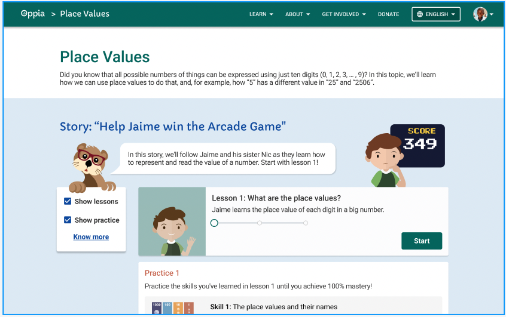

Learner research & design
Oppia Foundation
Study completed · recommendations proposed
Topic-page study · 20–21 October 2024
Can learners understand a topic page, start a lesson, and find their next step?
I tested three layouts with three participants on laptops, documented the findings, and recommended clearer icons, filters, and progress cues. My wider Oppia work also included tutoring, website analysis, and communication materials.
One participant tried each layout. The findings identify usability issues; they do not establish a winning design or measured learning gains.
